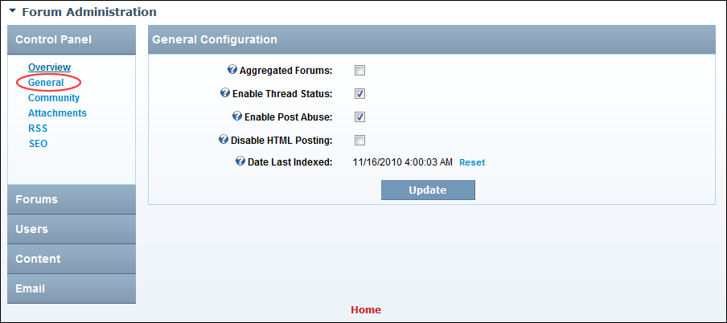

Configuring General Forum Settings
How to configure the general settings of the Forums module such as the forum name and enable other basic setting.
- Go to the Forum Administration page. See "Navigating to the Forum Admin Page"
- In the left-hand panel, select Control Panel > General. This displays the General Configuration window.
- At Aggregated Forums, to enable an aggregated view of threads in all public forums - OR - to disable.
- At Enable Thread Status, to enable users to set the status of any posts they began - OR - to disable. If enabled, thread status can be set as Unresolved, Resolved or Informative. Setting thread status is optional.
- At Enable Post Abuse, to enable user to report any post to moderators and/or Administrators - OR - to disable.
- At Disable HTML Posting, to use a plain text box to enter posts - OR - to use the Rich Text Editor and enable HTML posts.
- At Date Last Indexed, the date and time when the Forum content was last indexed (added to DNN search) is displayed. To re-index forum content click the Reset link. This will re-index all forum content again and the new date will be displayed. Depending on how busy your Forum is you may like to make this a weekly, fortnightly or monthly task.
-
Click the Update button.

General Configuration Settings for the Forum